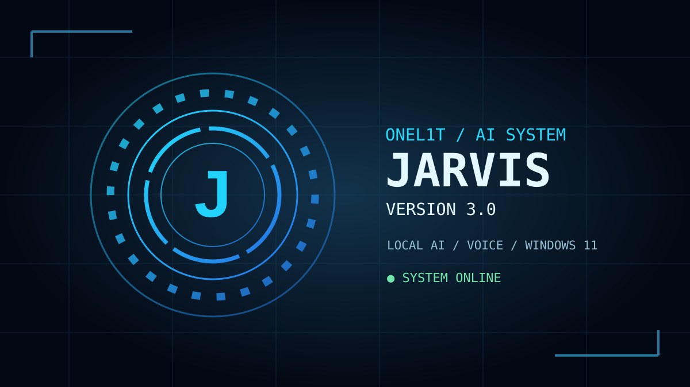

🧠 Local AI
Ollama and a customized Qwen-based model called jarvis. Chat context stays in memory during a session.
A Ukrainian desktop AI assistant with an animated HUD, local Ollama, Ukrainian voice and step-by-step, on-screen approval for working in Windows programs.

Ollama and a customized Qwen-based model called jarvis. Chat context stays in memory during a session.
Ukrainian push-to-talk, opt-in wake phrase, online Ukrainian Ostap male voice and explicit error messages instead of English voice fallback.
Open installed apps; list and activate visible windows; approve safe shortcuts, Unicode text, scrolling or one cursor click. Up to 4 steps with separate approval for each.
1. Install Python 3.12 and Ollama 2. Confirm: ollama list 3. Download the standalone JARVIS 4.3 ZIP 4. Run INSTALL_VOICE.bat 5. Run START_JARVIS.bat, test voice, then enable HANDS-FREE